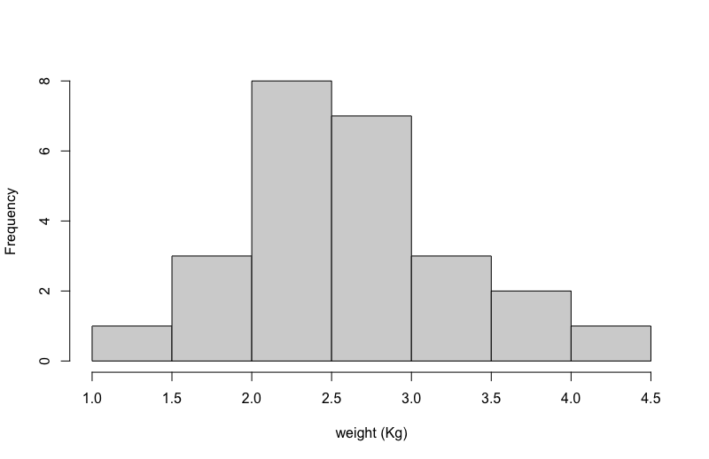

Question 1
Zombies are walking past my house. I have a bag of apples and I throw an apple at each zombie as it walks past. I record my hits and misses as follows:
MISS MISS HIT MISS HIT HIT MISS HIT MISS HIT HIT ...etc
What type of distribution best describes these data?
Question 2
I have trained my 25 cats to weigh themselves every morning on the bathroom scales. This morning I plotted their distribution. What best describes this distribution?

Question 3
Every morning I cycle to work. One week I decided to count the number of car drivers who make close passes (i.e. pass less than 1 m from my right elbow). What might describe this distribution?
| Day | Number of close passes |
|---|---|
| Monday | 2 |
| Tuesday | 0 |
| Wednesday | 1 |
| Thursday | 0 |
| Friday | 3 |
| Saturday | 0 |
| Sunday | 1 |